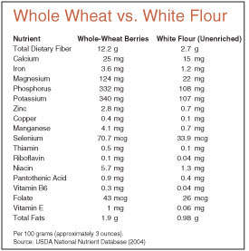

Who can resist the sweet fragrance of bread baking in the oven? Plus, breads made with fresh whole-wheat flours are vastly more nutritious than white breads. Hard to believe how many nutrients are lost when wheat flour is de-germed, bleached and otherwise processed. Don’t believe me? According to the USDA, compared to unenriched white flour, whole wheat contains:
Here’s an excellent recipe for a supernutritious whole-wheat loaf, sent to us by Michael Rickert of Reinbeck, Iowa:
Rickert’s Whole-wheat Bread
I have baked bread for more than 30 years. I developed this recipe to get as much whole wheat as possible into a light, moist bread. I use coarse-ground wheat and high-protein, high-gluten premium whole-wheat flour from Dakota Prairie Organic Flour Co.
The keys to this recipe are the high-protein, high-gluten whole-wheat flour, the coarse-ground wheat that keeps the bread moist, and the six hours it takes for the dough to rise, absorb the moisture and build a strong yeast.
Ingredients:
3 cups coarse-ground wheat
5 1/2 cups fresh whole-wheat flour
5 tsp yeast
6 1/4 cups water
1/2 cup honey
1/3 cup canola oil
3 tbsp ground flaxseed (optional)
5 tsp salt
About 7 to 8 cups white bread flour
First, mix the coarse-ground wheat, whole-wheat flour, yeast and water in a large bowl. Cover and let rise for six hours. Then, stir in the rest of the ingredients, except for the white bread flour. Add the white flour, 1 cup at a time, stirring with a heavy wooden spoon until the dough becomes too thick to stir. Now, knead the dough, adding the remainder of the white flour.
Next, cover the dough with a towel and let it rise until it doubles, about 1 1/2 hours.
Sprinkle a little white flour on the countertop, then punch down the dough and form five equal loaves. Place one dough loaf on each end of a cookie sheet, and three dough loaves lengthwise in the middle.
Make three cuts in the top of each loaf. Let the loaves rise in a warm place until a dimple made with your finger won’t bounce back.
Last, bake at 375 degrees for about 40 minutes. After baking, place each loaf on a rack and let cool for six hours or more.
Eat one loaf, freeze one loaf and you'll still have three loaves to give as gifts.
|
 |
|
|